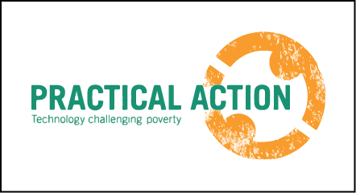
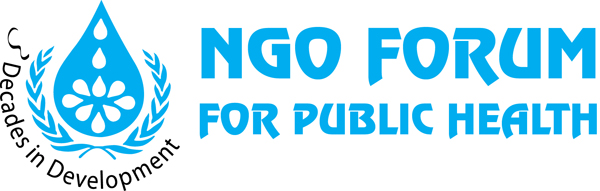
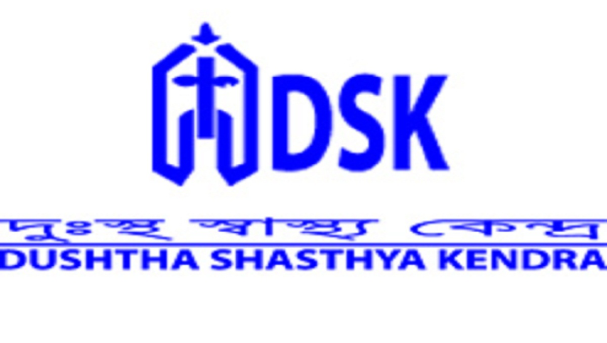

Independent Monitoring and Verification Services for Sanitation, Water and Hygiene for the Rural Poor (ASWA II), UNICEF Component 2018; UNICEF; DFID; Bangladesh; Burma (Myanmar); Cambodia; Eritrea; Haiti; Madagascar; Nepal; Niger; Pakistan; South Sudan Accelerating Sanitation, Hygiene and Water for All (ASWA II) is a DFID-funded programme that aims to achieve sustained access to basic sanitation and safe water supplies, as well as the long-term adoption of hygiene practices, across 10 focus countries (Bangladesh<, Burma, Cambodia, Eritrea, Haiti, Madagascar, Nepal, Niger, Pakistan and South Sudan).
The overall objective is to enable and sustain an open defecation free status across communities, with a target to supply 3,750,000 people with access to sanitation; establish basic and safe water supplies for 500,000 people; and provide 500 schools and 250 healthcare facilities with sustained access to improved WASH facilities.
The programme will help to strengthen a long-term strategic partnership between DFID and UNICEF by aiding developing countries in their pursuit of lasting WASH services for poor and vulnerable people. At the same time, DFID will support UNICEF to strengthen its core systems, particularly those relating to accountability, transparency and value for money.
ASWA II builds upon the momentum achieved through ASWA I, with the introduction of Eritrea and Haiti as two additional countries. It also includes new performance incentives, such as Payment by Results (PbR), that focus on the sustainability of sanitation outcomes.
Itad has been selected to provide DFID with independent monitoring and verification (IMV) for ASWA II. These IMV activities will focus on three inter-related areas:
Yearly appraisals of the monitoring systems, and biannual reviews of sustainability checks and outcome surveys used by UNICEF to report project results to DFID Yearly follow-up missions to review progress on appraisal recommendations Provision of project related advice to DFID
Working with partners Aguaconsult and IWEL, Itad is mobilising an international team working across the 10 countries. The team is developing a detailed methodology to assess project monitoring systems and related results, outcome surveys, sustainability checks (which are part-survey based) and associated capacity. IMV services will have a clear focus on gender sensitivity and vulnerable groups.
The initial systems appraisal will commence in September 2018.
Aswa ii Bangladesh Technical support by Bangladesh Open Innovation Lab (BOIL) in Bangladesh.
Implementation Agencies in Bangladesh are...   
#Water #Sanitation #Hygiene #Bangladesh #Wash #Aswaii #Unicef #OSMBDF #BOIL